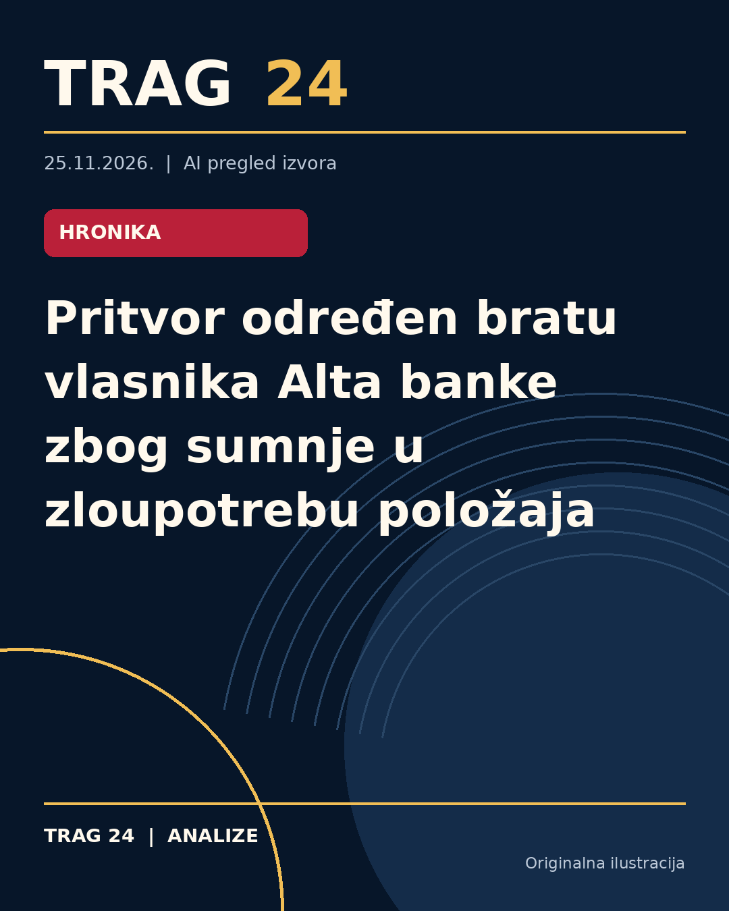

Pritvor određen bratu vlasnika Alta banke zbog sumnje u zloupotrebu položaja

ŠTA SE DOGODILO
Posebno odeljenje za organizovani kriminal Višeg suda u Beogradu odredilo je pritvor do 30 dana Dubravku Macuri, bratu odgovornog lica Alta banke Davora Macure. On je osumnjičen za izvršenje krivičnog dela zloupotreba položaja odgovornog lica pomaganjem. Pritvor je određen zbog opasnosti od bekstva, mogućnosti uticaja na svedoke i rizika ponavljanja krivičnog dela.
HRONOLOGIJA
Davor Macura, kao odgovorno lice Alta banke, uhapšen je početkom novembra zajedno sa direktorom Odeljenja trezora i upravljanja gotovinom Alta banke, G. M., i saradnikom za trezorsko poslovanje I. P. Sumnja se da je Davor Macura do 31. oktobra prekoračio granice svog ovlašćenja i pribavio protivpravnu imovinsku korist oko 45 milijardi dinara iz trezora banke, pri čemu su mu G. M. i I. P. pomagali omogućavajući neovlašćene ulaske u trezor pomoću kartica i prisustva.
ŠTA NAVODE IZVORI
Sud je ukazao da pritvor ima za cilj da spreči bekstvo, uticaj na svedoke i ponovno izvršenje krivičnog dela. Javno tužilaštvo za organizovani kriminal navodi da su osumnjičenja vezana za zloupotrebu položaja u okviru Alta banke i da su sva trojica osumnjičenih na različite načine doprineli izvršenju dela. Izvori potvrđuju da su istrage i dalje u toku, a pritvor se odnosi na Dubravka Macuru kao pomoć u izvršenju krivičnog dela.
ŠTA JE POTVRĐENO
Potvrđeno je da je Viši sud u Beogradu određen pritvor Dubravku Macuri zbog sumnje u krivično delo zloupotreba položaja odgovornog lica pomaganjem. Takođe, potvrđeno je hapšenje Davora Macure, kao i njegovih saradnika G. M. i I. P., koji su osumnjičeni za zloupotrebu položaja u Alta banci u periodu do kraja oktobra 2023. godine. Ukupna protivpravna imovinska korist procenjena je na oko 45 milijardi dinara.
ŠTA NIJE POTVRĐENO
Nema potvrda o tačnoj ulozi Dubravka Macure u nezakonitim radnjama, niti detalja o konkretnim aktivnostima koje su dovele do zadržavanja pritvora. Takođe, pravni status osumnjičenih, kao i eventualne dalje mere sudskog postupka, nisu objavljeni. Ne postoje nijedne informacije koje bi potvrdile krivicu bilo koga, već samo sumnje na osnovu kojih su određene mere zadržavanja.
ŠTA OSTАJE OTVORENO: Ostaje nepoznato kako će se odvijati dalji postupak u predmetu, uključujući stavove i odbranu osumnjičenih. Takođe, ostaje pitanje da li će biti podignuta optužnica, kao i na koji način će biti rešena situacija u Alta banci nakon ovih događaja. Dalja istraga može doneti nove saznanja o ulogama ostalih zaposlenih i moguće posledice za banku i njene klijente.
Izvori
- https://www.blic.rs/vesti/hronika/bratu-vlasnika-alta-banke-odredjen-pritvor-dubravko-macura-ostaje-iza-resetaka/nwbm470
- https://www.b92.net/info/hronika/288145/bratu-vlasnika-alta-banke-odredjen-pritvor/vest
Ova analiza je pripremljena uz pomoć veštačke inteligencije na osnovu javno dostupnih izvora. Navodi izvora nisu nužno nezavisno potvrđeni.